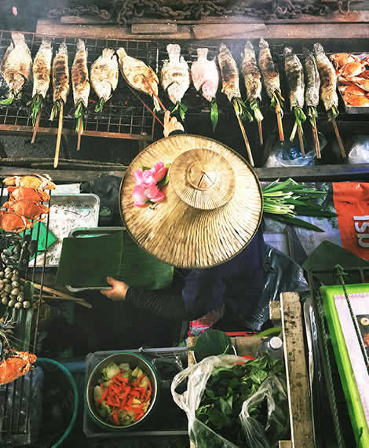

Pescado a las hierbas
Pescado fresco a la parrilla con limón, ajo y hierbas aromáticas.
Ver preparación
- Sazona el pescado con sal, limón, ajo y hierbas.
- Cocina sobre una parrilla caliente hasta dorar ambos lados.
- Sirve con vegetales frescos y limón.